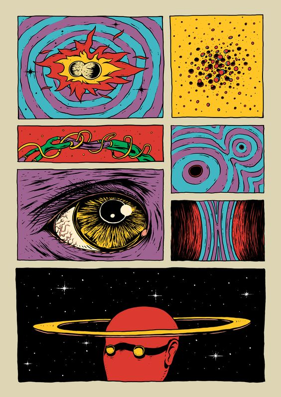
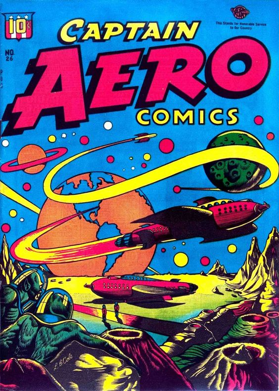

For Project 1, I want to design a website that represents the five alter egos of David Bowie. The homepage will navigate to the various alter egos including Ziggy Stardust (1972), Aladdin Sane (1973), The Thin White Duke (1976), Pierrot (1980), and The Blind Prophet (2016). Each page will contain songs from each album that the alter ego portrays, along with a short description of how each persona was created and how the alter egos influenced the albums made during that time period. My intent for this project is to create a website that consists of animation, bright colors, bold black lines, and groovy typography inspired by comic books from the 70s.
 